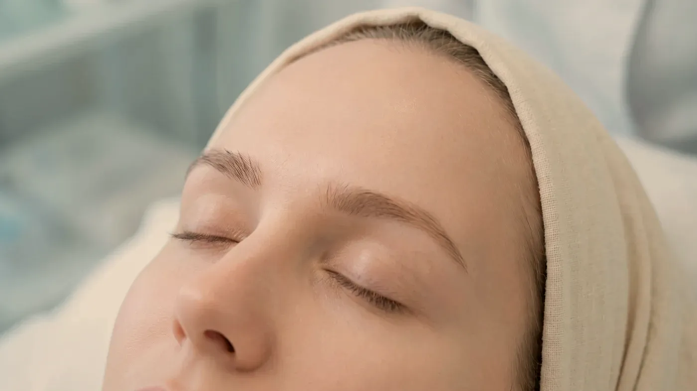
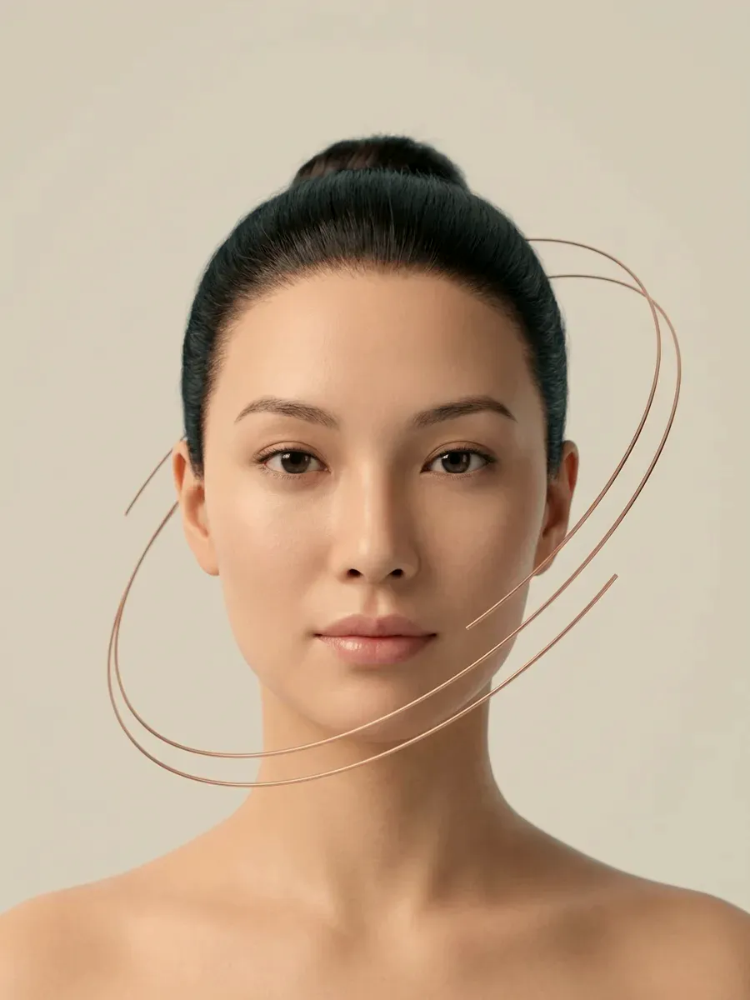

Enjeksiyonla Yapılanlar · Mimik, Kas ve Terleme
Botulinum toksin ile kas ve ter dengesi
Botulinum toksin, sinirden kasa giden “kasıl” komutunu bir süreliğine zayıflatan bir proteindir. Hekimin seçtiği birkaç noktaya çok küçük miktarlarda verilir; hedef, fazla çalışan bir kası yumuşatmak ya da ter bezine ulaşan uyarıyı azaltmaktır. Mimik çizgileri, diş sıkmaya bağlı kas kalınlaşması ve koltuk altı terlemesi birbirinden farklı sorulardır; sizin şikâyetiniz için hangisinin geçerli olduğu muayenede ortaya çıkar.

Temsilî görsel · yapay zekâ ile üretildiNe yapar, ne yapmaz
Botulinum toksin nedir, yüzde ve vücutta nerelerde kullanılır?
Sinir uçları, kasın kasılabilmesi için asetilkolin adlı bir haberci madde salgılar. Botulinum toksin bu salgıyı uygulandığı noktada bir süreliğine baskılar; kas daha az güçle kasılır, ter bezleri de benzer biçimde daha az uyarılır. Etki büyük ölçüde uygulandığı bölgeyle sınırlı kalır ve sinir uçları kendini yeniledikçe kaybolur.
Belirli bir kasın fazla çalışmasından ya da ter bezinin aşırı uyarılmasından kaynaklanan şikâyetlerde, hekimin seçtiği noktalara küçük miktarlarda yapılan, etkisi bölgesel ve süreli bir enjeksiyondur. Her yüzün kas gücü, mimik alışkanlığı ve iki yarısı arasındaki fark başkadır; bu yüzden nokta sayısı ve miktar kişiye göre belirlenir, hazır bir şema uygulanmaz.
Cerrahinin yerini tutmaz; sarkan deriyi kaldırmaz, fazla deriyi azaltmaz. Hacim kazandırmaz: çukurlaşma ve incelme başka bir değerlendirmenin konusudur. Cildin yüzeyini yenilemez: leke, gözenek, akne izi ve kuruluk için farklı yöntemler konuşulur. Kalıcı değildir; etki süresi dolduğunda kas eski hareketine kavuşur.
Alın ve göz çevresi
Alındaki yatay çizgiler, kaşların arasındaki dikey çizgi ve gülümserken göz kenarında beliren ince çizgiler, kasın tekrar eden hareketiyle derinleşir. Bu kasların gücü azaltıldığında çizgilerin yumuşaması amaçlanır. Yüz hareketsizken de görülen, deriye oturmuş çizgilerde etki daha sınırlı kalır.
Çiğneme kası (masseter)
Gece diş sıkma ya da gıcırdatma alışkanlığı olan kişilerde çiğneme kası kalınlaşabilir; çene köşesi daha geniş görünür, kasta yorgunluk hissedilebilir. Kas gücünün ölçülü biçimde azaltılması hedeflenir. Çene eklemi ve diş kaynaklı sorunların ayrımı için diş hekiminin görüşü de istenebilir.
Koltuk altı terlemesi
Kıyafeti ıslatan, gün içinde sık sık değişiklik gerektiren terlemede ter bezlerine giden uyarının azaltılması amaçlanır. Uygulamadan önce tiroid bozukluğu, kullanılan ilaçlar ve enfeksiyon gibi terlemeyi artırabilecek başka nedenler araştırılır.
Ağız çevresi ve alt yüz
Gülümserken diş etinin belirgin görünmesi ya da ağız köşesinin aşağı çekilmesi gibi, kaynağı kas olan belirli tablolarda çok düşük dozla değerlendirilebilir. Bu bölgedeki kaslar konuşma ve gülümsemede birlikte çalıştığı için hata payı dardır; her başvuruda uygun bulunmaz.
Boyundaki dikey bantlar
Boyun kasının kasılmasıyla öne çıkan dikey bantlarda, şikâyetin kaynağı kas hareketiyse seçilmiş kişilerde gündeme gelebilir. Yutma ve başı taşıyan kaslara komşu olduğu için yüze göre daha temkinli planlanır. Sorun deri gevşekliğiyse bu yöntem yanıt vermez.
Önce doğru başlık
Çizgilerinizin mimikle mi ilişkili yoksa deriye mi yerleşmiş olduğunu mimik çizgileri ve kırışıklık, terlemenin olası nedenlerini aşırı terleme sayfasında ayrıntılı anlattık. Bölge bazlı planlama için: göz çevresi, çene ve jawline, yüz.
Akış
Muayeneden kontrole planlama nasıl ilerler?
Plan, yüz hareketsizken değil hareket ederken yapılır. Kaşların konumu, göz kapağının seviyesi ve iki yüz yarısı arasındaki farklar; kaşlarınızı kaldırırken, çatarken ve gülümserken gözlenip kayda geçirilir.
Etkinin yerleşmesi
Değişiklik ilk günlerde başlar, yaklaşık iki haftada yerine oturur. Bu nedenle kontrol randevusu iki haftadan önceye verilmez.
Çubuklar oransal bir simgedir; size özel takvim muayenede netleşir.
- Öykü: kullandığınız ilaçlar, kas ve sinir sistemi hastalıkları, önceki uygulamalar sorulur; terleme şikâyetinde altta yatan nedenler araştırılır.
- Hareket analizi: mimikler canlı olarak izlenir, var olan asimetriler uygulamadan önce not edilir.
- Bilgilendirme ve onam: beklenen etki, diğer seçenekler ve hiç uygulama yapmamak da konuşulur; yazılı onam alınmadan işlem yapılmaz.
- Uygulama: cilt temizlenir, noktalar işaretlenir; işlemin kendisi birkaç dakikada tamamlanır.
- Kontrol: etki yerleştikten sonra görülürsünüz; gerekirse denge için küçük bir ek planlanır.
Uygulamanın yapılmadığı durumlar:
- Botulinum toksine ya da ürünün içindeki yardımcı maddelere karşı bilinen aşırı duyarlılık
- İşlem yapılacak alanda aktif enfeksiyon, iltihaplı sivilce ya da açık yara
- Miyastenia gravis, Lambert–Eaton sendromu ve benzeri sinir–kas iletimi hastalıkları
- Gebelik ve emzirme dönemi
- Uygulamanın karşılayamayacağı bir sonuç beklentisi
Ertelenen ya da ayrıca planlanan durumlar:
- Ateşli hastalık, yeni geçirilmiş enfeksiyon ya da kısa süre önce yapılmış aşı
- Kan sulandırıcı kullanımı veya bilinen pıhtılaşma bozukluğu
- Aminoglikozid grubu antibiyotiklerle ya da kas gevşetici ilaçlarla tedavi
- Düzenli seyretmeyen kronik hastalıklar
- Anafilaksi öyküsü ya da daha önceki bir enjeksiyonda gelişmiş ağır reaksiyon
Kullandığınız ilaçların, takviyelerin ve daha önce yaptırdığınız uygulamaların listesini randevuya getirmeniz, planın doğru kurulmasına yardımcı olur.

Temsilî görsel · yapay zekâ ile üretildi“İlk seans bir ölçüm gibidir: kasınızın doza nasıl yanıt verdiğini görmeden miktarı artırmayız, çünkü etkisini göstermeye başlayan doz geri çekilemez.”
Şikâyetinizi muayenede konuşalım
Hangi bölgenin uygun olduğu değerlendirmeden sonra netleşir.
Randevu isteyinDikkat edilecekler
Uygulamadan sonra neler görülebilir, hangi belirtide beklemeden başvurulur?
Her enjeksiyonun istenmeyen etkileri olabilir. Bilinen başlıkları sıklığına göre grupladık; bunların çoğu herkeste görülmez ve uygulamadan önce sizinle tek tek konuşulur.
Sık görülen, kısa süreli
İğne noktalarında kızarıklık, küçük kabarıklık, hafif sızı ve morluk. Bazı kişiler aynı gün baş ağrısı ya da alında gerginlik hissi tarif eder. Bu bulgular çoğunlukla birkaç gün içinde kendiliğinden kaybolur.
Daha az görülen
Etkinin komşu kaslara yayılması sonucu göz kapağında ya da kaşta düşüklük, kaş şeklinde beklenmeyen değişim, gülümsemede asimetri. Bunlar da geçicidir; ancak düzelmesi birkaç haftayı bulabilir.
Bölgeye bağlı
Çiğneme kası uygulamasından sonra sert yiyeceklerde geçici zorlanma; koltuk altı uygulamasından sonra bölgede hassasiyet ya da vücudun başka bir yerinde terlemenin artması bildirilebilir.
Yutkunmada zorlanma, konuşmanın bozulması, nefes almakta güçlük, çift görme, kollarda ya da bacaklarda yaygın güçsüzlük veya yüzde, dudakta ya da dilde hızla gelişen şişlik olursa randevu gününü beklemeyin. 112 Acil Çağrı Merkezi’ni arayın ya da en yakın hastanenin acil birimine başvurun.
Ne zaman
Etki ne zaman başlar, ne kadar sürer, ne zaman tekrarlanır?
Başlangıç
Uygulamanın hemen ardından bir değişiklik görülmez. Çoğu kişide etki birkaç gün içinde hissedilmeye başlar ve yaklaşık iki haftada yerleşir. Bu süre dolmadan yapılan bir değerlendirme gerçek sonucu yansıtmayacağı için kontrol buna göre planlanır.
Süre
Etkinin ne kadar süreceği; uygulanan bölgeye, kasın gücüne ve kişinin metabolizmasına göre değişir. Mimik kaslarında genellikle birkaç ay söz konusudur; güçlü çiğneme kaslarında ve terleme uygulamalarında süre farklı olabilir. Etki bittiğinde kas hareketi birden değil, yavaş yavaş geri gelir.
Tekrar
Süre dolduğunda yeni uygulama kendiliğinden gündeme gelmez. Bölge yeniden muayene edilir; ihtiyacın sürüp sürmediğine, noktaların ve miktarın değişip değişmeyeceğine birlikte karar verilir. Hekimin önerdiği aralıktan daha sık uygulama yapılmaz. Sonuçlar kişiden kişiye değişir.
Bu sayfa genel bilgi vermek için hazırlanmıştır ve kişisel bir tıbbi önerinin yerine geçmez. Uygulamanın size uygun olup olmadığı, muayene ve öykünüz değerlendirildikten sonra anlaşılır. Girişimsel hiçbir işlemin sonucu önceden taahhüt edilemez; yanıt kişiden kişiye değişir. Sayfanın amacı tanıtım ya da yönlendirme değil, bilgilendirmedir.
Uzm. Dr. Rahmi Cebeci, uzmanlık alanı ve Sağlık Bakanlığı onaylı medikal estetik sertifikasının tanımladığı sınırlar içinde çalışır. Bu sınırların dışında kalan bir talepte uygulama yapılmaz, ilgili uzmanlık dalına başvurmanız önerilir. Hangi işlemleri neden yapmadığımızı neden bazı işlemleri yapmıyoruz sayfasında açıkça anlattık.
Sık gelen sorular
Merak ettiğiniz soruya dokunun, yanıtı burada açılsın
Bir adım ötesi
Şikâyetinizi dinleyerek başlayalım
Öykünüzü aldıktan sonra hangi adımların sizin için anlamlı olduğunu birlikte konuşuruz. Cevizlik Mah. Ebuzziya Cad. No:47/1, Bakırköy / İstanbul.
Metni hazırlayan ve tıbbi açıdan gözden geçiren: Uzm. Dr. Rahmi Cebeci (Aile Hekimliği Uzmanı · Medikal Estetik Sertifikalı).
Buradaki anlatım herkese yöneliktir; size özel bir teşhis ya da tedavi planı sunmaz, muayenenin yerini tutmaz. Her uygulamanın etkisi kişiye göre farklı olur.